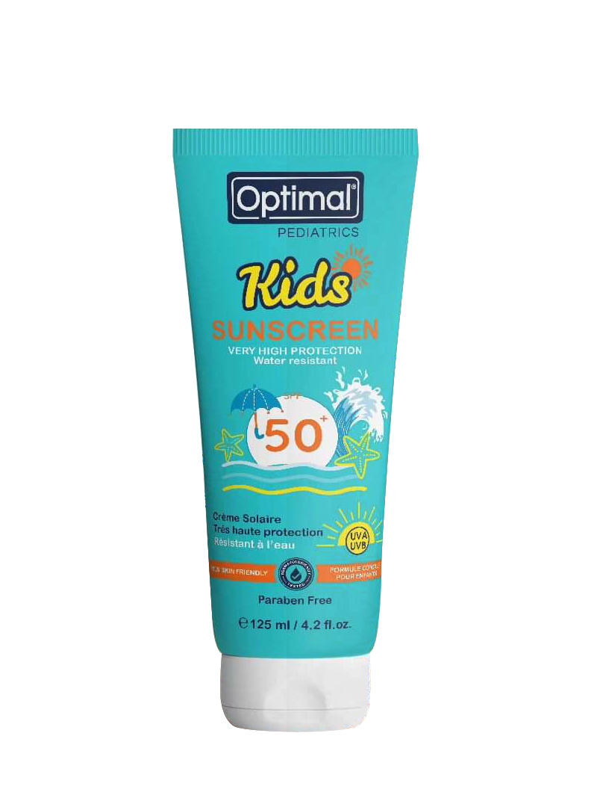

Banana Boat Kids Sunscreen Lotion SPF 50+ Details
Product Description: Banana Boat Kids Sunscreen Lotion provides SPF 50+ protection and is formulated specifically for children's delicate skin. It's tear-free and water-resistant for up to 80 minutes.
Ingredients: Zinc Oxide, Calendula Extract, Shea Butter, Vitamin B5
Price: $12.00
User Reviews: ★★★★☆ (4.5/5 based on 180 reviews)
Back to Sunscreens